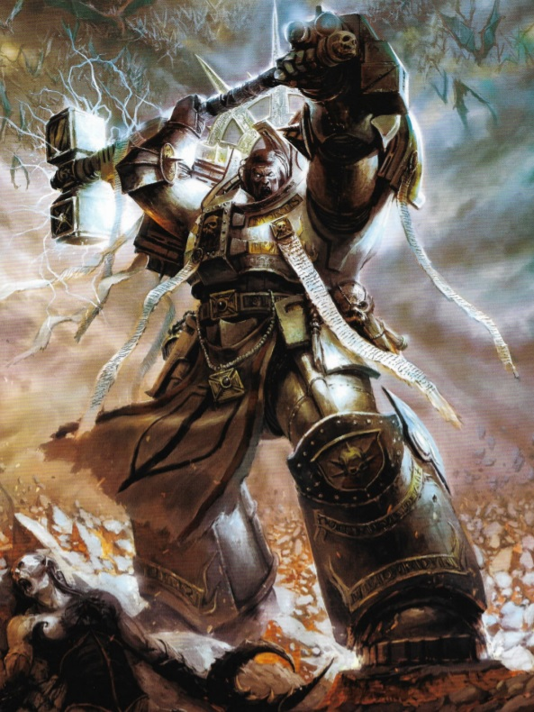

Grey Knights page
Photos of Grey Knights
Grey Knights are a faction in Warhammer 40.000 and they specialize in the banishment of daemons.

Links to other Grey Knight pages
Grey Knight page 2
Grey Knight page 3